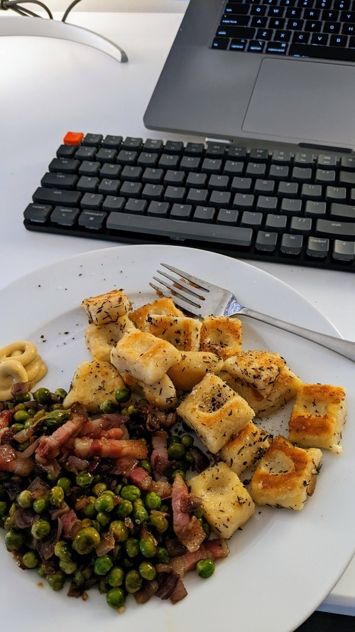

Gnocchi Bowl

Serves: 3
Prep time: 1.5hr
Author: Matthieu Court
Ingredients
1 bunch - Russet potatoes (3)
1 cup - Flour.
1 handful - Pancetta or Lardons
1 tray - Frozen or fresh Peas
1 - Egg / cup of Flour
Herbs - Fresh Thyme
Steps
Brown lardons, and heat up peas with them.
Rice boiled potatoes, add salt, flour, some thyme, egg and flour and knead into dough.
Form your gnocchi, blanch, then fry, adding some grated Parmigiano and lemon zest near the end.
Back to Home